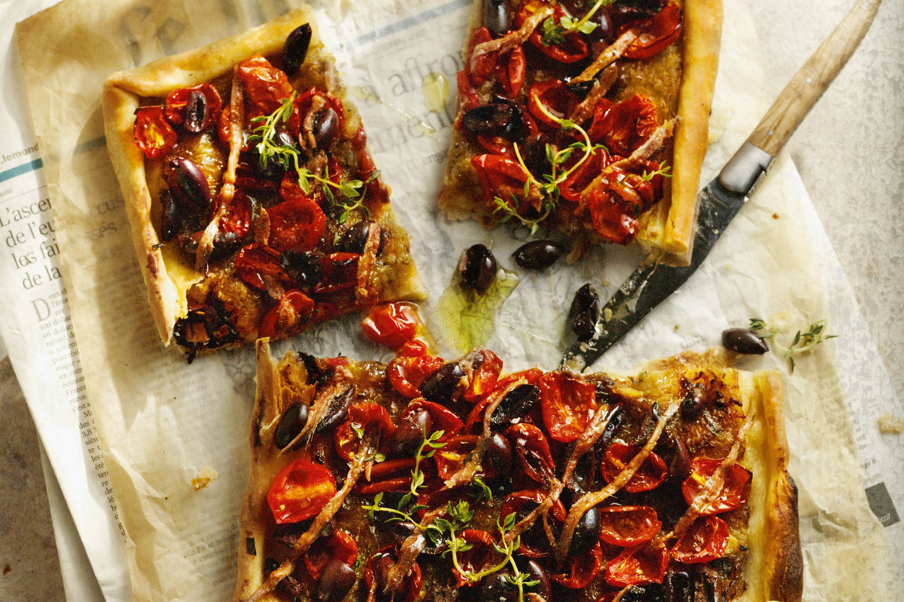
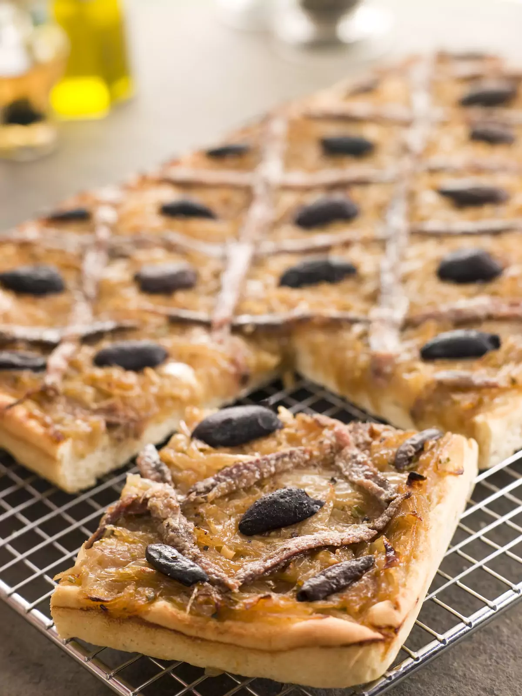

Pissaladière
Si vous êtes déjà allé dans le sud de la France, vous avez probablement déjà essayé une pissaladière. Ce plat originaire de Nice est composé d'une pâte à mi-chemin entre une pâte à pain et une pâte à pizza, et est garni d'oignons caramélisés, d'olives et d'anchois.
 Ingrédients :
- 3/4 tasse (200 g) de farine à pain blanche forte
- 1 cuillère à café de sel
- 2 cuillères à café de levure sèche facile à mélanger
- 2/3 tasse (150 ml) d'eau tiède
- 1 cuillère à soupe d'huile d'olive
- 35 oz (1 kg) d'oignons, tranchés finement
- 1 à 2 cuillères à soupe d'huile d'olive
- 2 gousses d'ail, écrasées
- 1 cuillère à soupe de sucre en poudre
- Quelques brins de thym
- 1 cuillère à café d'herbes de Provence séchées
- Sel poivre
- 5,6 oz (160 g) de filets d'anchois
- Une poignée d'olives noires
Instructions :
- Préparez la pâte à tarte : Étalez la pâte à tarte sur un moule préalablement graissé ou sur du papier sulfurisé et laissez-la reposer pendant que vous préparez la garniture.
- Faites revenir les oignons : Chauffez l'huile d'olive dans une grande poêle à feu moyen. Ajoutez les oignons coupés finement et faites-les revenir pendant environ 20 à 25 minutes, jusqu'à ce qu'ils soient tendres et caramélisés. Ajoutez l'ail haché et continuez à cuire pendant encore 2-3 minutes.Assaisonnez la garniture : Assaisonnez les oignons caramélisés avec du thym, du basilic, du sel et du poivre selon votre goût. Mélangez bien pour combiner les saveurs et laissez le mélange refroidir légèrement.
- Assemblez la pissaladière : Étalez uniformément le mélange d'oignons caramélisés sur la pâte à tarte. Disposez les filets d'anchois par-dessus, en les disposant de manière décorative, et parsemez les olives noires sur toute la surface.
- Faites cuire la pissaladière : Préchauffez le four à 200°C. Faites cuire la pissaladière pendant environ 25 à 30 minutes ou jusqu'à ce que la pâte soit dorée et croustillante, et que la garniture soit bien cuite et parfumée.
- Service : Sortez la pissaladière du four et laissez-la refroidir légèrement avant de la découper en morceaux et de la servir en apéritif ou en plat principal avec une salade verte fraîche.